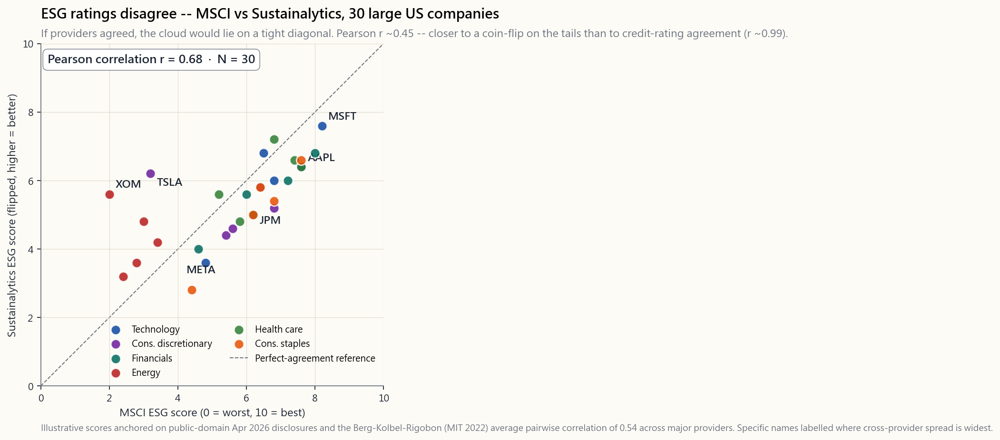
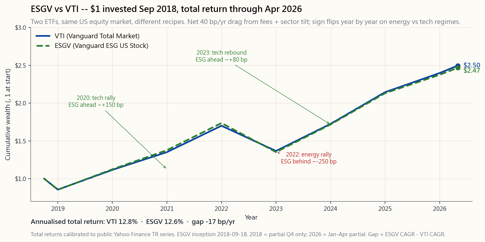

Side Lesson 12: ESG Investing — Values, Alpha, or Marketing?
1. Why This Is Important
ESG — environmental, social, governance — is the largest category of "branded" indexing to emerge since the index fund itself. Over fifty trillion dollars of global assets carry an ESG, sustainable, or responsible label by April 2026. Every prospectus you read now includes a sustainability paragraph. Every robo-adviser offers a "values" portfolio toggle. The question every honest investor has to answer is the same one any active product has to face: *is this a real source of alpha, or am I paying twenty basis points for someone else's preferences dressed up as performance?*
Four reasons this lesson deserves a side slot rather than a paragraph:
one ESG provider and "laggard" by another, on the same data, in the same week. Cross-provider correlations on identical companies run roughly 0.40-0.55 — barely better than a coin flip on the tails. If the input is noise, the output cannot be alpha.
plain-vanilla siblings (ESGV vs VTI, SUSL vs IVV) track
each other within 50-100 basis points per year, with the sign of
the gap flipping by sector regime. 2022 energy rally hurts ESG;
2020 and 2023 tech rallies help it. Net over eight years: roughly
tied. There is no "ESG premium" and no "ESG penalty" — there is
sector tilt noise.
ESGV charges 9 bps. SUSL charges 10 bps. DSI charges 25 bps.
Active ESG mutual funds routinely charge 60-100 bps. The premium is small in absolute terms but it is certain, and it accrues every year. The cost is the only part you can predict; the alpha is not.
Nothing in this lesson argues against ESG investing. The argument is don't buy it as alpha. Buy it because the externalities matter to you, and treat the ~15-25 bps of fee plus ~50 bps of tracking error as the dollar cost of expressing those values. That is a coherent, adult position. Pretending it pays for itself in returns is not.

2. What You Need to Know
2.1 What ESG Actually Measures (And Doesn't)
ESG is three independent pillars stapled into one acronym:
- Environmental. Carbon emissions (Scope 1, 2, 3), energy and water
- Social. Labour practices, supply-chain audits, diversity metrics,
- Governance. Board composition and independence, executive
The big providers — MSCI ESG, Sustainalytics (Morningstar), S&P Global, Bloomberg — each bake the three pillars into one composite score using their own weights, materiality maps, and company-disclosure adjustments. The recipes are proprietary, the inputs are partly self-reported, and the weightings change as methodology updates roll out. There is no GAAP for ESG.
That does not mean it's worthless. Governance scores in particular show real cross-sectional power on default risk, restatement frequency, and fraud detection. But the composite ESG score is a black box weighted sum of three different signals from one of four different vendors, and expecting it to be a clean alpha signal is a category error.
2.2 The Ratings Disagreement Problem
This is the single most important fact in ESG and the one most often buried. Pairwise correlation of overall ESG scores across the four major providers ranges from 0.38 (S&P vs Sustainalytics) to 0.71 (MSCI vs Bloomberg) on the same companies in the same year. The widely-cited Berg-Kolbel-Rigobon (MIT, 2022) study put the average pairwise correlation at 0.54.
Compare that to credit ratings. Moody's vs S&P on long-term issuer ratings correlate at roughly 0.99. Two analysts looking at the same balance sheet with the same default-rate history land in essentially the same place. ESG providers do not.
Three sources of the divergence:
- Scope. Different vendors define different sets of issues as
- Measurement. Some vendors mainly use company self-disclosures;
- Aggregation. The pillar weights and the within-pillar weightings
The practical implication: never make a portfolio decision off a single
ESG score. If XOM is 4th-percentile at MSCI and 60th-percentile at
S&P (this happens), what you actually have is no opinion.
2.3 The Common ESG ETF Menu
The retail ESG menu in April 2026 is dominated by three products plus a long tail of niche thematic funds:
| Ticker | Sponsor | Index | ER | AUM (Apr 2026) |
|---|---|---|---|---|
ESGV | Vanguard | FTSE US All-Cap Choice | 0.09% | ~$13 B |
SUSL | iShares | MSCI USA Extended ESG Leaders | 0.10% | ~$8 B |
DSI | iShares | MSCI KLD 400 Social | 0.25% | ~$5 B |
EFIV | SPDR | S&P 500 ESG | 0.10% | ~$2 B |
SUSA | iShares | MSCI USA ESG Select | 0.25% | ~$4 B |
The exclusions are mostly the same across products: tobacco, civilian firearms, controversial weapons, thermal coal, and the worst-rated company in each industry. The inclusion methodologies vary more —
DSI is a curated 400-name list; ESGV excludes by category and
keeps about 1,400 names; SUSL is closer to optimised re-weighting of
the parent index.
Two patterns to notice. First, the fee premium over plain VTI (3 bps)
is 6-22 bps for the systematic ESG ETFs and much more for active ESG
mutual funds. Second, all of these products are underweight energy
and overweight technology relative to the cap-weighted market —
this is the structural sector tilt that drives most of the tracking
error.
2.4 Performance — ESGV vs VTI Since Inception
ESGV launched in September 2018, giving us roughly seven and a half
years of out-of-sample data through April 2026. That is enough to make some claims and not enough to make others.
What we can say:
- Annualised total returns are within 50 bps of each other.
VTI
ESGV ~12.0%/yr over the full window — a 40 bp gap that
is approximately equal to the difference in fees plus the structural
sector tilt drag.
- The year-by-year sign flips on regime. 2020 (tech rally):
ESGV
ESGV behind by
~250 bps. 2023 (tech rally): ESGV ahead by ~80 bps. 2024-25
(broadening): roughly tied.
- Tracking error vs
VTIruns 50-80 bps annualised. Less than a
What we cannot say:
- Whether ESG screening improved risk-adjusted returns. The Sharpe
- Whether ESG will outperform over the next decade. The drivers are

2.5 Greenwashing and the Marketing Problem
Greenwashing is the practice of slapping ESG labels on products with minimal change to their actual investment process. Three flavours worth knowing:
- Repackaging. A fund company renames an existing global equity
- Best-in-class washing. A fund holds the least bad company in
XOM and CVX,
because they have to hold something in the energy bucket. Your
exposure to the externality you wanted to avoid is barely changed.
- Theme dilution. A "clean energy" fund whose top holdings are
The defence is mechanical: read the holdings list. If your
"fossil-fuel-free" fund's top-25 includes any of XOM, CVX, COP,
OXY, EOG, you are not in a fossil-fuel-free fund. The brochure is
wrong; the holdings are right.
2.6 Engagement vs Divestment
Two coherent ESG philosophies, with different mechanics:
- Divestment. Sell the offending companies. Reduce your exposure
- Engagement. Hold the offending companies and vote. Submit
Most retail ESG ETFs are pure divestment products. Engagement-driven
strategies are concentrated in active managers (Engine No. 1 famously
elected three directors to the XOM board in 2021) and in some
pension funds. Neither approach has demonstrated clean alpha; both
have a coherent theory of impact.
2.7 Where ESG Sits in the Four-Tranche Frame
If ESG matters to you, where does it fit in the four-tranche portfolio?
- Growth tranche — substitute
ESGVforVTI, accept ~40 bp
- Income tranche — substitute
SUSC(sustainable corporate bonds)
LQD, or EFAX for ex-tobacco international. Effects are
smaller still.
- Stores of value — gold and Treasuries are not ESG-screenable.
SBSW, NEM) but mining is rarely a
long-only ESG fit. Skip the screen here.
- Opportunistic — most of the alpha sources (vol
Don't ESG every dollar. The screen has its strongest case in the broadest, most liquid, lowest-fee parts of the portfolio — and its weakest case in the alpha tranches where you are paying for skill, not exclusion.
3. Common Misconceptions
The evidence does not support this. The eight-year ESGV vs VTI
record is within fee-plus-noise. Whatever modest "good companies do
better" effect exists is offset by the higher fee and the
structural sector tilt.
Average pairwise correlation across the four major providers is ~0.54, vs ~0.99 for credit ratings. Same company, same year, sharply different scores.
measurable cost* (~15-25 bps fees plus ~50 bps tracking error) for the ability to align holdings with stated values. Treat it as such.
shares re-clear at a slightly lower price to a less constrained
buyer. Capital cost effects are real but small. The dominant
effect is on your portfolio, not on XOM.
"best-in-class" or "exclude thermal coal," which still leaves significant fossil-fuel exposure. Read the holdings list.
not. Most large ESG ETFs (ESGV, SUSL, DSI) are passive index
trackers that vote with management on most resolutions. You are
paying for index licensing, not activism.
data on ESG-labelled active funds looks the same as SPIVA on non-ESG active funds: 60-85% trail their benchmark over 5+ years.
concerns."** Holding cap-weighted broad market plus engaging via vote, plus directly funding climate solutions outside the portfolio, is also coherent and arguably more impactful per dollar.
VICEX, etc.) outperform because of thereverse-ESG premium."** The historical edge was small and is not showing up post-2018. Whatever excess existed has been arbitraged by the growth of ESG flows themselves.
VTI,VOO, SPY do no ESG screening. They hold whatever is in the
index. If you want screening, you have to ask for it explicitly.
4. Q&A Section
Q: Should I use ESG ETFs or build my own screen?
A: Use ETFs unless you have a very specific exclusion list that no ETF
matches. The tax efficiency, low fee, and diversification of ESGV
or SUSL are hard to replicate in a self-directed account. DIY
screens also subject you to tax-lot turnover every time a company
drops off your list.
Q: Will ESG investing hurt my retirement returns?
A: On the eight-year ESGV vs VTI record, by ~40 bps a year,
mostly fee plus sector tilt. Compounded over 30 years on $500k, that
is ~$60-90k of forgone wealth — meaningful, not catastrophic. If the
values matter to you, that is the price of the ticket.
Q: Which ESG rating provider should I trust? A: None of them in isolation. If you must pick one, MSCI ESG is the most widely benchmarked and the most transparent on methodology updates. But the right answer is "look at scores from at least two providers and treat large disagreements as a signal that the rating itself is unreliable for that name."
Q: Are ESG ETFs more tax-efficient than active ESG funds? A: Yes, by a lot. ETFs use the in-kind creation/redemption mechanism (see Side 03) and rarely distribute capital gains. Active ESG mutual funds distribute gains at typical mutual-fund rates. In a taxable account, the ETF wrapper is a 30-80 bp tax-drag advantage.
Q: Does the SEC regulate ESG fund labelling? A: Increasingly. The SEC's Names Rule (1940 Act 35d-1) was extended in 2023 to require funds with "ESG", "sustainable" or similar in their name to invest at least 80% of assets in line with the implied policy. Enforcement actions have already hit several large complexes.
**Q: What about "greenwashing" risk in my retirement plan's default
ESG fund?**
A: Read the holdings. If the top-25 holdings of your "sustainable US
equity" fund look essentially identical to the top-25 of VTI, you
are paying ESG fees for closet indexing. Ask your plan administrator
for a fee comparison.
Q: Do ESG-screened bond funds make sense?
A: Less than equity ESG funds. Sovereign and Treasury bonds are not
ESG-screenable in any meaningful way. Corporate bond ESG screens add
cost for marginal exclusion benefit. If you want sustainability in
fixed income, green bonds (BGRN) are a clearer instrument than
broad ESG bond funds.
**Q: How does ESG interact with factor tilts (value, quality, momentum)?** A: Mostly as a sector tilt. Quality and ESG overlap meaningfully — both prefer profitable, well-governed firms. Value and ESG correlate weakly negative — value tilts toward cheap, often controversial sectors. Momentum and ESG are largely orthogonal. Combining ESG with factor tilts works but expect higher tracking error.
**Q: Is "thematic" ESG (clean energy, water, gender) better than
broad ESG?**
A: Worse, on average. Thematic ESG funds (ICLN, PHO, SHE) carry
much higher tracking error, much higher fees, and worse
diversification. The 2020-2022 clean-energy boom-bust cycle is a
textbook case: ICLN peaked February 2021, dropped 60%, and has not
recovered. Broad ESG ETFs were almost unaffected.
Q: If ESG ratings are unreliable, why do they move stock prices?
A: Index inclusion does. When MSCI adds a stock to its ESG Leaders
index, ESG ETFs like SUSL have to buy it, regardless of whether the
rating itself is "right." This is the same passive-flow mechanism
that drives any index reconstitution. The price effect is real; the
rating that triggered it may still be noise.
Q: What's a reasonable summary position?
A: If values matter to you, use a low-fee broad ESG ETF (ESGV or
SUSL) for your core US equity exposure. Accept the ~15-25 bps fee
premium and ~50 bps tracking error as the cost of expression. Do not expect alpha. Do not pay active fees for ESG. Read your holdings list twice a year. Alpha is still rare; the screen does not change that.
Q: What does Horace personally do?
A: He doesn't ESG his core. He runs VTI plus the four-tranche
sleeves. The values expression happens outside the portfolio — in
direct charitable giving, in voting his proxies, and in choosing not
to short companies he has ethical objections to. The portfolio is for
maximising risk-adjusted return; the values are a separate ledger.
Both ledgers matter; mixing them just makes both harder to read.
附加課程 12：ESG 投資 — 價值觀、阿爾法，還是市場推廣？
1. 為何此課題重要
ESG — 環境、社會、管治 — 是自指數基金誕生以來，「品牌化」指數化投資中規模最大的類別。截至 2026 年 4 月，全球持有 ESG、可持續或負責任標籤的資產已逾五十萬億美元。你現在閱讀的每份招股章程都包含一段可持續發展說明。每個智能投資顧問都提供「價值觀」投資組合切換選項。每位誠實的投資者都必須回答同一個問題，而這也是任何主動產品所要面對的問題：這究竟是真正的阿爾法來源，還是我花了二十個基點，只是為別人的偏好披上業績的外衣？
以下四個原因，說明為何此課題值得獨立成一節附加課程，而非僅以一段文字帶過：
ESGV 對比 VTI、SUSL 對比 IVV）每年回報相差不超過 50 至 100 個基點，且差距的正負方向會隨板塊周期而轉換。2022 年能源板塊反彈拖累 ESG；2020 年及 2023 年科技板塊反彈則對其有利。八年下來淨回報：大致打平。既無「ESG 溢價」，亦無「ESG 懲罰」— 有的只是板塊傾斜帶來的雜訊。ESGV 收費 9 個基點。SUSL 收費 10 個基點。DSI 收費 25 個基點。主動管理型 ESG 互惠基金動輒收費 60 至 100 個基點。以絕對值而言，費用溢價雖然不大，但卻是確定的，且每年都在累積。費用是你唯一能預測的部分；阿爾法則不然。2. 你需要掌握的知識
2.1 ESG 實際衡量什麼（以及不衡量什麼）
ESG 是三個獨立支柱拼湊而成的一個縮寫：
- 環境。 碳排放（範疇一、二、三）、能源及用水強度、廢物、土地使用、氣候轉型風險。此支柱的定量數據最多，可量化的分歧也最大。
- 社會。 勞工待遇、供應鏈審計、多元化指標、社區影響、產品安全。主要為定性數據，且多屬企業自行申報。
- 管治。 董事會構成及獨立性、高管薪酬一致性、會計透明度、審計質量、股東權利。此支柱對財務重要性的實證支持最強 — 管治不善可靠地損耗股東資本。
這並不意味著 ESG 毫無價值。管治評分在違約風險、重述頻率及欺詐偵測的橫截面分析中確實顯示出實質效力。但 綜合 ESG 評分是四家不同供應商之一所提供的三種不同信號的黑箱加權總和，期望它成為純粹的阿爾法信號，本身就是概念上的錯誤。
2.2 評級分歧問題
這是 ESG 領域最重要的單一事實，也是最常被埋沒的一個。四大主要供應商對相同公司在同一年的 ESG 整體評分，兩兩之間的相關性從 0.38（標普對比 Sustainalytics）到 0.71（MSCI 對比彭博）不等。廣泛引用的 Berg-Kolbel-Rigobon（麻省理工，2022 年）研究顯示，平均兩兩相關性為 0.54。
對比信用評級。穆迪與標普在長期發行人評級上的相關性約為 0.99。兩位分析師審視同一份資產負債表，參考同一份違約率歷史，得出的結論基本一致。ESG 供應商則截然不同。
分歧的三個來源：
- 範圍。 不同供應商對「重要」議題的定義各異。MSCI 對能源公司的氣候風險賦予較高權重；標普在科技行業對人力資本賦予較高權重。同一家公司正在被以不同標準衡量。
- 計量方式。 部分供應商主要依賴公司自行披露；其他供應商則抓取新聞、監管文件及非政府組織報告。同一個碳足跡，取決於你相信公司的數字還是自行建模，結果可以大相逕庭。
- 加總方式。 各支柱的權重以及支柱內部的子項權重因供應商而異。如何在「範疇三排放」、「董事會多元化」及「數據隱私」之間取得平衡，目前尚無共識。
XOM 在 MSCI 的評分處於第四百分位，而在標普卻處於第六十百分位（確有此事），那你實際上持有的是無立場。
2.3 常見 ESG 交易所買賣基金菜單
截至 2026 年 4 月，零售 ESG 市場由三款主流產品及一大批細分主題基金主導：
| 代碼 | 發行商 | 追蹤指數 | 開支比率 | 資產管理規模（2026 年 4 月） |
|---|---|---|---|---|
ESGV | 先鋒 | FTSE 美國全市值精選指數 | 0.09% | 約 130 億美元 |
SUSL | iShares | MSCI 美國擴展 ESG 領先指數 | 0.10% | 約 80 億美元 |
DSI | iShares | MSCI KLD 400 社會指數 | 0.25% | 約 50 億美元 |
EFIV | SPDR | 標普 500 ESG 指數 | 0.10% | 約 20 億美元 |
SUSA | iShares | MSCI 美國 ESG 精選指數 | 0.25% | 約 40 億美元 |
各產品的剔除範疇大致相同：煙草、民用槍械、爭議性武器、熱煤，以及每個行業中評分最低的公司。納入方法則差異更大 — DSI 為精選 400 隻股份的名單；ESGV 以類別剔除，保留約 1,400 隻股份；SUSL 則更接近對母指數的優化重新加權。
有兩個規律值得關注。第一，相對於 VTI（3 個基點）的費用溢價，系統化 ESG 交易所買賣基金為 6 至 22 個基點，主動管理型 ESG 互惠基金則高出更多。第二，所有這些產品相對於市值加權市場，均低配能源、高配科技 — 這是驅動大部分追蹤誤差的結構性板塊傾斜。
2.4 業績 — ESGV 對比 VTI 自成立以來
ESGV 於 2018 年 9 月成立，截至 2026 年 4 月，提供約七年半的樣本外數據。足以作出部分判斷，但亦有不少問題尚無定論。
可以說的是：
- 年化總回報相差不超過 50 個基點。在整個觀察期內，
VTI約為每年 12.4%，ESGV約為每年 12.0% — 40 個基點的差距，大致等同於費用差異加結構性板塊傾斜的拖累。 - 逐年表現正負隨周期轉換。2020 年（科技反彈）：
ESGV領先約 150 個基點。2022 年（能源反彈、科技下挫）：ESGV落後約 250 個基點。2023 年（科技反彈）：ESGV領先約 80 個基點。2024 至 25 年（市場廣化）：大致打平。 - 相對於
VTI的追蹤誤差，年化為 50 至 80 個基點。高於板塊中性傾斜，低於細價股傾斜。
- ESG 篩選是否改善了風險調整後的回報。在此樣本上，夏普比率在統計上無從區分。
- ESG 未來十年是否會跑贏大市。驅動因素是板塊構成及科技動量，而非 ESG 信號本身。
2.5 漂綠行為與市場推廣問題
漂綠是指將 ESG 標籤貼在實際投資流程幾乎毫無改變的產品上的做法。以下三種類型值得了解：
- 重新包裝。 基金公司將一隻現有的全球股票基金更名為「可持續全球股票」，調整少量持倉，並將費用提高 15 至 20 個基點。2021 至 2022 年美國證券交易委員會的執法行動，已針對多家大型基金公司採取這類行動。
- 同類最佳漂綠。 基金持有每個板塊中「最不壞」的公司。因此，「ESG 能源基金」仍然持有
XOM及CVX，因為它必須在能源板塊中持有某些東西。你對那些你本想迴避的外部效應的曝險，幾乎沒有改變。 - 主題稀釋。 一隻「清潔能源」基金，其主要持倉卻是只有邊際可再生能源曝險的公用事業公司。標籤承諾一回事；持倉交付另一回事。
XOM、CVX、COP、OXY、EOG 中的任何一隻，你持有的就不是一隻無化石燃料的基金。宣傳冊是錯的；持倉才是對的。
2.6 參與倡議對比撤資
兩種合理的 ESG 理念，各有不同的運作機制：
- 撤資。 出售問題公司股份，將曝險降至零。論據在於道德層面（不讓壞的行為者獲得資金）及信號層面（買家減少推高資本成本）。反駁論點是：每一個賣家都有一個買家，而邊際買家通常比你更不受約束 — 因此股票最終落入不會進行倡議的人手中。
- 參與倡議。 持有問題公司股份並行使投票權。提交股東決議案，對不稱職的董事會投票反對，推動信息披露。論據在於影響力 — 先鋒、貝萊德及道富集團合計控制標普 500 指數約 20% 的投票權，積極投票行動可改變企業行為。反駁論點是：三大機構的實際投票記錄偏保守，影響力往往未被使用。
XOM 董事會選出三名董事）及部分退休基金中。兩種方式均未展示出清晰的阿爾法；但兩者各有合理的影響力理論。
2.7 ESG 在四大分層框架中的定位
若 ESG 對你而言是重要的，它應如何融入四大分層投資組合？
- 增長倉位 — 以
ESGV替代VTI，接受約 40 個基點的拖累，即告完成。這是 ESG 交易所買賣基金最具實用價值之處：被動管理、覆蓋廣泛、費用低廉、剔除標準透明。 - 收益倉位 — 以
SUSC（可持續公司債）替代LQD，或以EFAX替代剔除煙草的國際基金。影響更為細微。 - 價值儲存 — 黃金及國債無法進行 ESG 篩選。黃金礦業公司（
SBSW、NEM）可以，但礦業行業甚少與多頭 ESG 相符。此處略去篩選。 - 機會性倉位 — 大多數阿爾法來源（波動性收割、因子傾斜、期權收益）並非天然的 ESG 產品。若你運作主動管理的分倉，將其視為與 ESG 問題無關的獨立範疇。
3. 常見誤解
實證數據並不支持此說。ESGV 對比 VTI 的八年記錄，差距在費用加雜訊的範圍之內。「優質公司表現更佳」的效應，即便存在，也被較高的費用及結構性板塊傾斜所抵銷。
實則截然不同。四大主要供應商的平均兩兩相關性約為 0.54，而信用評級之間的相關性約為 0.99。同一家公司，同一年，評分可以大相逕庭。
它是一個小而可量化的代價（約 15 至 25 個基點的費用加約 50 個基點的追蹤誤差），換取將持倉與既定價值觀對齊的能力。應如此看待之。
影響有限。股份以略低的價格重新成交至受限更少的買家手中。資本成本的影響是真實存在的，但幅度微小。主要影響在於你自己的投資組合，而非 XOM。
大多數並非如此。它們是「同類最佳」或「剔除熱煤」，這仍留有相當的化石燃料曝險。請閱讀持倉名單。
通常並非如此。大多數大型 ESG 交易所買賣基金（ESGV、SUSL、DSI）是被動型指數追蹤基金，在大多數決議上跟隨管理層投票。你所付的是指數授權費，而非社會活動費。
SPIVA 對 ESG 標籤主動型基金的數據，與非 ESG 主動型基金如出一轍：60 至 85% 在五年以上的周期中跑輸基準。
持有市值加權廣泛市場基金、積極行使投票代理權，以及在投資組合之外直接資助氣候解決方案，同樣是合理的做法，且論據充分，或許每一美元的影響力更大。
VICEX 等）因逆向 ESG 溢價而跑贏大市。」歷史上的優勢微乎其微，且自 2018 年後已未再顯現。任何曾經存在的超額收益，已被 ESG 資金流本身的增長所套利。
普通 VTI、VOO、SPY 不進行任何 ESG 篩選。它們持有指數中的所有成份股。如需篩選，必須明確要求。
4. 問答環節
問：我應使用 ESG 交易所買賣基金，還是自行建立篩選標準？
答：使用交易所買賣基金，除非你有一份極為具體的剔除名單，而沒有任何交易所買賣基金與之匹配。ESGV 或 SUSL 的稅務效率、低費用及分散投資，在自行管理的賬戶中難以複製。自行篩選還會令你每次有公司從名單中剔除時，都面臨稅務批次的換手問題。
問：ESG 投資會損害我的退休回報嗎？
答：根據 ESGV 對比 VTI 的八年記錄，每年約少賺 40 個基點，主要來自費用及板塊傾斜。以 50 萬美元的本金複利計算 30 年，差距約為 6 至 9 萬美元 — 不可忽視，但也非災難性的。若這些價值觀對你而言是重要的，這便是你為之付出的代價。
問：我應信任哪家 ESG 評級供應商？ 答：不應單獨信任任何一家。若必須選擇其一，MSCI ESG 是最廣泛被用作基準的，在方法論更新上亦最為透明。但正確答案是「參考至少兩家供應商的評分，並將大幅分歧視為該評級本身對該公司而言不可靠的信號。」
問：ESG 交易所買賣基金的稅務效率是否高於主動型 ESG 基金？ 答：是的，高出許多。交易所買賣基金採用實物申購/贖回機制（詳見附加課程 03），鮮少分派資本增值。主動型 ESG 互惠基金按一般互惠基金的方式分派增值。在應課稅賬戶中，交易所買賣基金的結構具有 30 至 80 個基點的稅務拖累優勢。
問：美國證券交易委員會是否監管 ESG 基金標籤？ 答：力度日益加強。美國證券交易委員會依據《1940 年投資公司法》第 35d-1 條的命名規則，已於 2023 年延伸至要求名稱中含有「ESG」、「可持續」或類似字眼的基金，須將至少 80% 的資產按照相應政策配置。執法行動已針對多家大型基金集團展開。
問：我退休計劃中的默認 ESG 基金是否存在漂綠風險？
答：請閱讀持倉。若你「可持續美國股票」基金的前 25 大持倉，看起來與 VTI 的前 25 大持倉基本相同，你正在為掛羊頭賣狗肉的指數追蹤支付 ESG 費用。請向你的退休計劃管理人索取費用比較表。
問：ESG 篩選的債券基金是否合理？
答：不及股票 ESG 基金。主權債及國債在任何有意義的層面上均無法進行 ESG 篩選。公司債的 ESG 篩選在費用上有所增加，但剔除帶來的實質效益有限。若你希望在固定收益中體現可持續發展理念，綠色債券（BGRN）是比廣泛 ESG 債券基金更為清晰的工具。
問：ESG 如何與因子傾斜（價值、質量、動量）相互作用？ 答：主要體現為板塊傾斜。質量因子與 ESG 有相當大的重疊 — 兩者均偏好盈利能力強、管治完善的公司。價值因子與 ESG 呈弱負相關 — 價值傾斜偏向估值低廉、往往較具爭議的板塊。動量因子與 ESG 大致無關。將 ESG 與因子傾斜結合可行，但預期追蹤誤差會更高。
問：「主題式」ESG（清潔能源、水資源、性別平等）是否優於廣泛 ESG？
答：平均而言更差。主題式 ESG 基金（ICLN、PHO、SHE）的追蹤誤差更高、費用更高、分散程度更低。2020 至 2022 年清潔能源的暴漲暴跌周期是典型案例：ICLN 於 2021 年 2 月見頂，其後下跌 60%，至今仍未復原。廣泛 ESG 交易所買賣基金幾乎未受影響。
問：若 ESG 評級不可靠，為何它們仍能推動股價？
答：納入指數能做到。當 MSCI 將一隻股票加入其 ESG 領先指數，SUSL 等 ESG 交易所買賣基金便須買入，無論評級本身是否「正確」。這與任何指數重組所驅動的被動資金流動機制相同。價格影響是真實的；觸發它的評級仍可能是雜訊。
問：較為全面的總結立場是什麼？
答：若價值觀對你而言是重要的，以低費用的廣泛 ESG 交易所買賣基金（ESGV 或 SUSL）作為核心美國股票曝險。接受約 15 至 25 個基點的費用溢價及約 50 個基點的追蹤誤差，視之為表達價值觀的代價。不要期望阿爾法。不要為 ESG 支付主動管理費用。每年閱讀持倉名單兩次。阿爾法依然稀缺；篩選不能改變這一點。
問：陳馬個人如何操作？
答：他不對核心倉位進行 ESG 篩選。他運作 VTI 加上四大分層分倉。價值觀的表達發生在投資組合之外 — 透過直接慈善捐款、行使投票代理權，以及選擇不沽空他存在道德異議的公司。投資組合的目的是最大化風險調整後的回報；價值觀是獨立的帳目。兩本帳目都重要；混為一談只會令兩者都更難閱讀。
番外課 12：ESG 投資——價值觀、阿爾法，還是行銷噱頭？
1. 為什麼這個主題值得重視
ESG——環境、社會、公司治理——是自指數基金問世以來，規模最大的「品牌化」指數化投資類別。截至 2026 年 4 月，全球已有逾 50 兆美元的資產掛上 ESG、永續或責任投資的標籤。你現在翻閱的每一份公開說明書都有一段永續性段落。每一家機器人理財顧問都提供「價值觀」投資組合切換選項。每位誠實的投資人必須回答的問題，和面對任何主動型產品時一樣：這是真正的阿爾法來源，還是我花了二十個基點，買的不過是別人的偏好，只是用績效包裝起來？
這堂課值得獨立成一個番外單元，而不只是一個段落，有以下四個原因：
ESGV 對比 VTI、SUSL 對比 IVV）的年報酬差距都在 50 至 100 個基點以內，且差距的正負方向隨類股環境而交替翻轉。2022 年能源股反彈，ESG 吃虧；2020 年及 2023 年科技股反彈，ESG 受益。八年下來的淨結果：大致平手。既不存在所謂的「ESG 溢酬」，也沒有「ESG 懲罰」——有的只是類股偏斜帶來的雜訊。ESGV 收 9 個基點。SUSL 收 10 個基點。DSI 收 25 個基點。主動型 ESG 共同基金通常收取 60 至 100 個基點。就絕對金額而言，費用溢價雖小，卻是確定的，而且逐年累積。費用是你唯一能預測的部分；阿爾法則無法預測。2. 你需要了解的重點
2.1 ESG 實際在衡量什麼（以及沒在衡量什麼）
ESG 是三個獨立支柱被強行拼入同一個縮寫：
- 環境（E）。 碳排放（範疇一、二、三）、能源與用水強度、廢棄物、土地使用、氣候轉型風險。這個支柱擁有最多量化資料，也有最多可量測的分歧。
- 社會（S）。 勞動實踐、供應鏈稽核、多元化指標、社區影響、產品安全。大多屬質性資料，且多半仰賴企業自行揭露。
- 公司治理（G）。 董事會組成與獨立性、高管薪酬的利益一致性、會計透明度、稽核品質、股東權益。這個支柱擁有最強的財務實質性佐證——惡劣的治理確實會可靠地侵蝕股東資本。
這不代表它毫無價值。公司治理評分在違約風險、財報重編頻率及詐欺偵測方面，確實展現出真實的橫截面預測力。但 ESG 綜合評分是一個黑盒子加權總和，整合了來自四家不同機構之一的三種不同訊號，若期待它是乾淨的阿爾法訊號，那是類別上的錯誤。
2.2 評等分歧問題
這是 ESG 領域最重要的單一事實，也是最常被埋沒的。四大主要機構對相同公司、同年度的整體 ESG 評分，兩兩相關性從 0.38（S&P 對比 Sustainalytics）到 0.71（MSCI 對比 Bloomberg）不等。廣受引用的 Berg-Kolbel-Rigobon 研究（麻省理工學院，2022 年）得出的平均兩兩相關性為 0.54。
對比信用評等：穆迪與 S&P 對長期發行人評等的相關性約為 0.99。兩位分析師看著同一份資產負債表、同一份違約率歷史，結論幾乎完全相同。ESG 機構做不到這一點。
分歧來自三個根源：
- 範疇。 不同機構對「重要性」的定義涵蓋不同議題。MSCI 對能源公司氣候風險的權重較高；S&P 對科技業人力資本的權重較高。同一家公司被用不同評分標準衡量。
- 衡量方式。 部分機構主要採用企業自行揭露的資料；其他機構則爬取新聞、監管申報文件及非政府組織報告。同一個碳排放量，依賴企業自報數字或自行建模，結果便大相逕庭。
- 加總方式。 各機構對支柱權重及支柱內各指標的權重設定各有不同。如何衡量「範疇三排放」相對於「董事會多元性」相對於「資料隱私」，目前並無共識。
XOM 在 MSCI 排第 4 百分位，在 S&P 卻排第 60 百分位（這種情況確實存在），你實際上得到的是沒有意見。
2.3 常見 ESG 指數股票型基金清單
截至 2026 年 4 月，零售 ESG 市場由三檔主要產品加上一條長尾利基主題型基金所主導：
| 代碼 | 發行商 | 追蹤指數 | 費用率 | 資產規模（2026 年 4 月） |
|---|---|---|---|---|
ESGV | Vanguard | FTSE US All-Cap Choice | 0.09% | 約 130 億美元 |
SUSL | iShares | MSCI USA Extended ESG Leaders | 0.10% | 約 80 億美元 |
DSI | iShares | MSCI KLD 400 Social | 0.25% | 約 50 億美元 |
EFIV | SPDR | S&P 500 ESG | 0.10% | 約 20 億美元 |
SUSA | iShares | MSCI USA ESG Select | 0.25% | 約 40 億美元 |
各產品的排除標的大致相同：菸草、民用槍枝、爭議性武器、燃煤，以及各產業中評等最差的公司。納入方法論則差異較大——DSI 是精選 400 檔名單；ESGV 按類別排除後保留約 1,400 檔；SUSL 更接近對母指數進行優化再加權。
有兩個模式值得留意。其一，相較於普通版 VTI（3 個基點），系統性 ESG 指數股票型基金的費用溢價為 6 至 22 個基點，主動型 ESG 共同基金則遠更高。其二，相較於市值加權市場，這些產品全都低配能源、高配科技——這是驅動大部分追蹤誤差的結構性類股偏斜。
2.4 績效——ESGV 對比 VTI 自成立以來表現
ESGV 於 2018 年 9 月上市，截至 2026 年 4 月，我們已有約七年半的樣本外資料。這足以做出某些論斷，但不足以做出另一些論斷。
我們可以說的：
- 年化總報酬相差在 50 個基點以內。在整個觀察期間，
VTI約為 12.4%/年，ESGV約為 12.0%/年——40 個基點的差距，大致等於費用差異加上結構性類股偏斜拖累。 - 逐年來看，正負方向隨市場環境翻轉。2020 年（科技股反彈）：
ESGV領先約 150 個基點。2022 年（能源股反彈、科技股重挫）：ESGV落後約 250 個基點。2023 年（科技股反彈）：ESGV領先約 80 個基點。2024-25 年（漲勢擴散）：大致打平。 - 相對於
VTI的追蹤誤差為年化 50 至 80 個基點。小於小型股偏斜，大於類股中性偏斜。
- ESG 篩選是否改善了風險調整後報酬。以此樣本而言，夏普比率在統計上無法區別。
- ESG 在未來十年是否將跑贏大盤。驅動因子是類股組成及科技動能，而非 ESG 訊號本身。
2.5 漂綠與行銷問題
漂綠是指將 ESG 標籤貼在實際投資流程幾乎未變的產品上的做法。有三種值得了解的類型：
- 重新包裝。 一家基金公司將現有的全球股票基金改名為「永續全球股票」，調整少量持股，並將費用率提高 15 至 20 個基點。2021 至 2022 年美國證券交易委員會執法潮，就因此對多家大型基金公司開罰。
- 最佳中選洗白。 基金持有每個類股中「最不壞」的公司。因此，「ESG 能源基金」仍然持有
XOM和CVX，因為能源類股一定要持有某些東西。你對原本希望規避之外部性的曝險，幾乎沒有任何改變。 - 主題稀釋。 「潔淨能源」基金的前幾大持股卻是再生能源比重微乎其微的公用事業公司。標籤承諾一件事；持股交付的是另一件事。
XOM、CVX、COP、OXY、EOG 中的任何一檔，那你持有的就不是無化石燃料基金。說明書是錯的；持股是對的。
2.6 參與倡議 vs. 撤資
兩種合理的 ESG 哲學，機制各有不同：
- 撤資。 賣出違規公司，將曝險降至零。論點是道德面（不讓資金流入壞的行為者）與訊號面（買家減少，提高資金成本）。反論點是：每個賣方都有買方，邊際買方通常比你受到更少約束——因此股票最終落入那些不會參與倡議的人手中。
- 參與倡議。 持有違規公司並投票。提出股東提案，對不良董事會投反對票，推動資訊揭露。論點是槓桿——Vanguard、BlackRock 和 State Street 合計掌控約 20% 的標普 500 指數投票權，參與投票能改變企業行為。反論點是三大機構的實際投票紀錄偏向保守，槓桿往往閒置不用。
XOM 董事會選出三名董事）及部分退休基金。兩種方法都未能展現乾淨的阿爾法；兩者都有合理的影響力理論。
2.7 ESG 在四分桶框架中的定位
如果 ESG 對你而言確實重要，它應放在四分桶投資組合的哪一個位置？
- 成長分桶——用
ESGV取代VTI，接受約 40 個基點的拖累，大功告成。這是 ESG 指數股票型基金最有用的地方：被動式、廣泛、費用低、排除標準透明。 - 收益分桶——可用
SUSC（永續公司債）取代LQD，或用排除菸草的EFAX取代國際股票配置。效果更小。 - 價值儲存——黃金與國庫券無法進行 ESG 篩選。黃金礦業公司可以（
SBSW、NEM），但採礦業鮮少符合純多頭 ESG 的要求。這裡略過篩選即可。 - 機會型——大多數阿爾法來源（波動率收割、因子傾斜、選擇權收益）本身並非 ESG 產品。若你有主動型投資分桶，將其視為與 ESG 議題無關即可。
3. 常見迷思
證據不支持這個說法。ESGV 對比 VTI 八年的紀錄落在費用加雜訊的範圍內。任何「好公司表現較好」的微弱效應，都被較高的費用及結構性類股偏斜所抵消。
絕對不是。四大主要機構的平均兩兩相關性約為 0.54，而信用評等的相關性約為 0.99。同一家公司、同一年度，評分卻截然不同。
它其實是一個可量測的小額成本（約 15 至 25 個基點費用加上約 50 個基點追蹤誤差），換來將持股與所聲明的價值觀對齊的能力。請如實看待。
略微如此。股票以稍低的價格重新成交給受到較少約束的買方。資金成本效應是真實的，但影響微小。主要效應是在你的投資組合上，而非在 XOM 身上。
大多數不是。它們採用「最佳中選」或「排除燃煤」，仍保有相當程度的化石燃料曝險。請閱讀持股清單。
通常不是。大多數大型 ESG 指數股票型基金（ESGV、SUSL、DSI）是被動型追蹤指數的產品，在大多數決議上跟隨管理層投票。你付費買的是指數授權，不是社會運動。
SPIVA 對 ESG 標籤主動型基金的統計數據，和非 ESG 主動型基金的結果一樣：60 至 85% 的基金在 5 年以上的期間跑輸基準。
持有市值加權廣泛市場、透過投票參與倡議，加上在投資組合之外直接資助氣候解決方案，同樣合理，每一塊錢的影響力或許還更大。
VICEX 等）因反向 ESG 溢酬而跑贏大盤。」歷史上的優勢幅度微小，而且在 2018 年之後已不再出現。任何曾存在的超額報酬，都已被 ESG 資金流入的成長所套利殆盡。
普通版 VTI、VOO、SPY完全不做 ESG 篩選。它們持有指數裡的所有成分股。若你需要篩選，必須明確提出要求。
4. 問答區
問：我應該使用 ESG 指數股票型基金，還是自建篩選組合？
答：除非你有一份非常具體的排除清單，且沒有任何指數股票型基金能匹配，否則請使用指數股票型基金。ESGV 或 SUSL 的稅務效率、低費用與分散投資，在自行管理帳戶中很難複製。DIY 篩選每次有公司從清單中剔除，都會產生稅務批次的換手成本。
問：ESG 投資會拖累我的退休報酬嗎？
答：以 ESGV 對比 VTI 八年的紀錄來看，年均約 40 個基點，主要是費用加類股偏斜。以 50 萬美元複利計算 30 年，相當於約 6 至 9 萬美元的財富損失——有感，但不至於災難性。如果這些價值觀對你而言重要，這就是入場券的代價。
問：我應該信任哪家 ESG 評等機構？ 答：不要只信任任何一家。如果非選一家不可，MSCI ESG 在業界基準使用上最為廣泛，方法論更新上也最透明。但正確答案是「至少參照兩家機構的評分，並將大幅分歧視為該評分本身對這家公司而言不可靠的訊號」。
問：ESG 指數股票型基金的稅務效率比主動型 ESG 基金更好嗎？ 答：好很多。指數股票型基金使用實物申購/贖回機制（見番外課 03），鮮少分配資本利得。主動型 ESG 共同基金則以一般共同基金的速率分配利得。在應稅帳戶中，指數股票型基金結構具有 30 至 80 個基點的稅務拖累優勢。
問：美國證券交易委員會有規範 ESG 基金標籤嗎？ 答：力道日益加強。2023 年修訂的《名稱規則》（1940 年投資公司法第 35d-1 條）要求名稱中包含「ESG」、「永續」或類似字眼的基金，至少須將 80% 的資產投入符合其聲明政策的標的。已有多家大型基金公司遭到執法行動。
問：我的退休金計畫預設 ESG 基金有漂綠風險嗎？
答：看持股清單。如果你的「永續美國股票」基金前 25 大持股看起來和 VTI 的前 25 大幾乎完全相同，你付的是 ESG 費用，買的是假裝主動的指數追蹤。請向你的計畫管理人索取費用比較資料。
問：ESG 篩選的債券基金有意義嗎？
答：比股票 ESG 基金的意義更小。主權債券與國庫券無法進行任何有意義的 ESG 篩選。公司債 ESG 篩選付出費用，換來的邊際排除效益有限。如果你想在固定收益領域表達永續立場，綠色債券（BGRN）比廣泛 ESG 債券基金更直接。
問：ESG 如何與因子傾斜（價值、品質、動能）互動？ 答：主要表現為類股傾斜。品質因子與 ESG 有顯著重疊——兩者都偏好獲利能力強、治理良好的公司。價值因子與 ESG 的相關性略為負值——價值傾斜偏向便宜、往往爭議性較高的類股。動能因子與 ESG 大致無關。將 ESG 與因子傾斜結合是可行的，但預期追蹤誤差會更高。
問：「主題型」ESG（潔淨能源、水資源、性別平等）比廣泛型 ESG 更好嗎？
答：平均而言更差。主題型 ESG 基金（ICLN、PHO、SHE）的追蹤誤差更高、費用更高、分散程度更低。2020 至 2022 年潔淨能源榮枯循環是教科書級案例：ICLN 於 2021 年 2 月達到高峰後重挫 60%，至今尚未回復。廣泛型 ESG 指數股票型基金幾乎未受影響。
問：如果 ESG 評等不可靠，為何還能影響股價？
答：指數納入能做到這一點。當 MSCI 將一檔股票新增至其 ESG 領先指數時，SUSL 等 ESG 指數股票型基金就必須買入該股，不論評等本身是否「正確」。這和任何指數定期調整成分股驅動被動資金流動的機制相同。價格效應是真實的；觸發它的評等也許仍然是雜訊。
問：有沒有一個合理的總結立場？
答：如果價值觀對你而言重要，就用低費用的廣泛型 ESG 指數股票型基金（ESGV 或 SUSL）作為你的核心美股部位。接受約 15 至 25 個基點的費用溢價及約 50 個基點的追蹤誤差，將其視為表達立場的成本。不要期待阿爾法。不要為 ESG 支付主動式管理費用。每年閱讀兩次持股清單。阿爾法本來就很稀少；篩選改變不了這個事實。
問：陳馬個人怎麼做？
答：他的核心部位不做 ESG 篩選。他持有 VTI 加上四分桶各項配置。價值觀的表達發生在投資組合之外——透過直接公益捐款、為其持股投票，以及選擇不放空他在道德上反對的公司。投資組合是為了最大化風險調整後報酬；價值觀是另一本帳。兩本帳都重要；把它們混在一起，只會讓兩者都更難讀清楚。
番外课 12：ESG 投资——价值观、阿尔法，还是营销噱头？
1. 为什么这一课值得学
ESG——即环境、社会、公司治理——是自指数基金诞生以来规模最大的"品牌化"指数产品类别。截至 2026 年 4 月，全球贴有 ESG、可持续或责任投资标签的资产已超过五十万亿美元。你现在读到的每一份招募说明书都包含可持续发展段落。每一家智能投顾都提供"价值观"投资组合切换选项。每位诚实的投资者都必须回答同一个问题——这个问题任何主动型产品都逃不开：这究竟是真正的阿尔法来源，还是我花二十个基点买了别人偏好包装成的业绩？
以下四个原因说明这一课值得单独设为番外，而非一笔带过：
ESGV 对比 VTI，SUSL 对比 IVV）每年的跟踪误差在 50 至 100 个基点以内，差距的正负号随板块周期切换而翻转。2022 年能源板块反弹令 ESG 受损；2020 年和 2023 年科技板块反弹令其受益。八年累计下来：大体打平。既不存在"ESG 溢价"，也不存在"ESG 惩罚"——有的只是板块倾斜带来的噪音。ESGV 收取 9 个基点。SUSL 收取 10 个基点。DSI 收取 25 个基点。主动型 ESG 共同基金通常收取 60 至 100 个基点。绝对数字不大，但确定会发生，且年年累积。成本是唯一可以预测的部分；阿尔法则无从预测。2. 你需要了解的内容
2.1 ESG 实际衡量的是什么（以及不衡量什么）
ESG 是三个独立支柱拼凑在一个缩写下的产物：
- 环境（E）。 碳排放（范围一、二、三），能源和水资源强度，废弃物，土地利用，气候转型风险。这是定量数据最多、可测量分歧也最多的支柱。
- 社会（S）。 劳工实践、供应链审计、多元化指标、社区影响、产品安全。大多以定性指标为主，大多依赖企业自我披露。
- 公司治理（G）。 董事会构成与独立性、高管薪酬激励一致性、会计透明度、审计质量、股东权利。这是财务实质性证据最充分的支柱——糟糕的公司治理会可靠地侵蚀股东资本。
这并不意味着 ESG 毫无价值。公司治理评分在违约风险、财务报告重述频率和欺诈识别方面表现出真实的横截面预测能力。但 ESG 综合评分是四家不同供应商之一对三种不同信号进行黑箱加权汇总的结果，期望它成为干净的阿尔法信号，本身就是一个类别错误。
2.2 评级分歧问题
这是 ESG 领域最重要的事实，也是最常被掩盖的事实。四大供应商对同一家公司、同一年度的整体 ESG 评分的两两相关性从 0.38（标普对比 Sustainalytics）到 0.71（MSCI 对比彭博）不等。被广泛引用的 Berg-Kolbel-Rigobon（麻省理工，2022 年）研究将平均两两相关性定为 0.54。
对比信用评级。穆迪与标普对长期发行人评级的相关性约为 0.99。两位分析师看同一张资产负债表、同样的历史违约率，得出的结论基本一致。ESG 供应商做不到这一点。
分歧来源于三个方面：
- 覆盖范围。 不同供应商对"实质性"议题的定义不同。MSCI 对能源公司气候风险的权重较高；标普对科技公司人力资本的权重较高。同一家公司被放在不同的评分标尺下衡量。
- 计量方法。 有些供应商主要采用公司自我披露数据；其他供应商则爬取新闻、监管文件和 NGO 报告。同样的碳排放足迹，是否信任公司自报数字，得出的结果截然不同。
- 汇总方式。 各供应商在支柱权重和支柱内部权重上各不相同。如何权衡"范围三排放"、"董事会多元化"与"数据隐私"，目前没有共识。
XOM 在 MSCI 评分中位于第 4 百分位，在标普评分中位于第 60 百分位（这种情况确实存在），你实际上得到的是没有任何有效意见。
2.3 常见 ESG 交易所交易基金一览
截至 2026 年 4 月，零售市场的 ESG 产品以三款主力产品为主，辅以大量细分主题型基金：
| 代码 | 发行商 | 跟踪指数 | 费用率 | 规模（2026 年 4 月） |
|---|---|---|---|---|
ESGV | 先锋 | 富时美国全市场精选指数 | 0.09% | 约 130 亿美元 |
SUSL | 贝莱德 | MSCI 美国扩展 ESG 领导者指数 | 0.10% | 约 80 亿美元 |
DSI | 贝莱德 | MSCI KLD 400 社会指数 | 0.25% | 约 50 亿美元 |
EFIV | 道富 | 标普 500 ESG 指数 | 0.10% | 约 20 亿美元 |
SUSA | 贝莱德 | MSCI 美国 ESG 精选指数 | 0.25% | 约 40 亿美元 |
各产品的排除标准大体相同：烟草、民用枪支、争议性武器、动力煤，以及每个行业评分最低的公司。纳入标准的差异更大——DSI 是经过精挑细选的 400 只成分股；ESGV 按类别排除后保留约 1,400 只；SUSL 则更接近对母指数进行优化重新加权。
有两个规律值得注意。第一，与费率仅 3 个基点的 VTI 相比，系统化 ESG 交易所交易基金的费率溢价为 6 至 22 个基点，主动型 ESG 共同基金则高得多。第二，所有这些产品相对市值加权市场而言均低配能源、超配科技——这是驱动大部分跟踪误差的结构性板块倾斜。
2.4 业绩表现——ESGV 对比 VTI（自成立以来）
ESGV 于 2018 年 9 月成立，截至 2026 年 4 月提供约七年半的样本外数据。数据量足以得出部分结论，但不足以得出所有结论。
可以说的：
- 年化总收益相差在 50 个基点以内。在整个区间内，
VTI年化约 12.4%，ESGV约 12.0%——40 个基点的差距大致等于费率差加结构性板块倾斜拖累。 - 逐年差距随市场环境而切换。2020 年（科技板块反弹）：
ESGV领先约 150 个基点。2022 年（能源板块反弹、科技板块下挫）：ESGV落后约 250 个基点。2023 年（科技板块反弹）：ESGV领先约 80 个基点。2024—2025 年（行情扩散）：基本持平。 - 相对
VTI的跟踪误差年化在 50 至 80 个基点之间。比小盘股倾斜小，比中性板块倾斜大。
- ESG 筛选是否改善了风险调整后收益。在这一样本上，夏普比率在统计意义上无法区分。
- ESG 未来十年是否会跑赢。驱动因素是板块构成和科技股动量，而非 ESG 信号本身。
2.5 漂绿现象与营销问题
漂绿是指在实际投资流程几乎未变的情况下，将 ESG 标签贴在产品上的行为。以下三种类型值得了解：
- 重新包装。 一家基金公司将现有的全球股票基金更名为"可持续全球股票"，调整少量持仓，将费率提高 15 至 20 个基点。2021—2022 年美国证券交易委员会执法浪潮已对数家大型基金公司因此类行为提出指控。
- "同类最优"漂绿。 基金持有每个板块中最不差的公司。因此"ESG 能源基金"仍然持有
XOM和CVX，因为能源板块必须持有某些东西。你对本想规避的外部性的实际暴露几乎没有改变。 - 主题稀释。 "清洁能源"基金的前几大持仓是可再生能源占比微薄的公用事业公司。标签承诺一件事，持仓却交付另一件事。
XOM、CVX、COP、OXY、EOG 中的任何一只，你持有的就不是无化石燃料基金。宣传册是错的；持仓是对的。
2.6 参与式股东行动 vs 撤资
两种连贯的 ESG 理念，运作机制各不相同：
- 撤资。 卖出问题公司，将持仓降至零。支持论点是道德层面（不向坏参与者输送资金）和信号层面（买家减少推高融资成本）。反驳论点是：每个卖家都有对应的买家，边际买家通常比你限制更少——股票最终落到不会参与治理的人手中。
- 参与式行动。 持有问题公司股票并行使投票权。提交股东提案，投票反对不称职的董事会，推动信息披露。支持论点是影响力——先锋、贝莱德和道富合计控制标普 500 约 20% 的投票权，积极投票能改变公司行为。反驳论点是：三大巨头的实际投票记录偏保守，杠杆往往未被使用。
XOM 董事会选入三名新董事堪称典范）和部分养老金中。两种方式均未展现出干净的阿尔法；两者都有连贯的影响力理论。
2.7 ESG 在四仓框架中的位置
如果 ESG 对你重要，它在四仓投资组合中处于何处？
- 成长仓——用
ESGV替代VTI，接受约 40 个基点的拖累，完成。这是 ESG 交易所交易基金最有用的地方：被动、宽基、低费用、排除标准透明。 - 收益仓——用
SUSC（可持续公司债）替代LQD，或用剔除烟草的国际基金EFAX替代同类产品。效果更小。 - 价值储存仓——黄金和国债无法进行 ESG 筛选。黄金矿业公司可以（
SBSW、NEM），但采矿业很少适合纯多头 ESG 框架。此处跳过筛选。 - 机会仓——大多数阿尔法来源（波动性收割、因子倾斜、期权收益）并非天然的 ESG 产品。如果你运营主动仓位，将其视为与 ESG 问题正交。你付费买的是能力，而非排除。
3. 常见误解
ESGV 对比 VTI 的记录在费用加噪音范围之内。"好公司业绩更好"效应即便存在，也被更高的费用和结构性板块倾斜所抵消。XOM。ESGV、SUSL、DSI）是被动指数跟踪基金，在大多数决议上随管理层投票。你付的是指数授权费，而非股东行动费。VICEX）因逆 ESG 溢价而跑赢。" 历史上的优势微弱，且在 2018 年后未见延续。即便曾存在超额收益，也已被 ESG 资金流入本身所套利。VTI、VOO、SPY 不做任何 ESG 筛选。它们持有指数内所有成分股。如果你想要筛选，必须明确提出要求。4. 问答环节
问：我应该用 ESG 交易所交易基金，还是自己构建筛选体系？
答：使用交易所交易基金，除非你有一份明确的排除清单且没有任何交易所交易基金能够匹配。ESGV 或 SUSL 的税务效率、低费用和分散投资很难在自行管理的账户中复制。自建筛选体系还会在每次公司从名单中移除时产生税务批次更替问题。
问：ESG 投资会影响我的退休收益吗？
答：根据八年 ESGV 对比 VTI 的记录，每年约差 40 个基点，主要来自费用和板块倾斜。以 50 万美元本金复利 30 年，差距约为 6 至 9 万美元——有意义，但不是灾难性的。如果这些价值观对你重要，这就是门票的价格。
问：我应该信任哪家 ESG 评级供应商？ 答：不应单独信任任何一家。如果必须选一家，MSCI ESG 是被最广泛用于基准的，方法论更新最透明。但正确答案是"至少参考两家供应商的评分，将大幅分歧视为该名称的评级本身不可靠的信号"。
问：ESG 交易所交易基金比主动型 ESG 基金更节税吗？ 答：是的，差距很大。交易所交易基金使用实物申购赎回机制（见番外课 03），几乎不分配资本利得。主动型 ESG 共同基金按典型共同基金税率分配收益。在应税账户中，交易所交易基金包装有 30 至 80 个基点的税务拖累优势。
问：美国证券交易委员会是否监管 ESG 基金的标签使用？ 答：监管力度正在加强。美国证券交易委员会于 2023 年扩展了《投资公司法》35d-1 条款下的名称规则，要求名称中含有"ESG"、"可持续"或类似词汇的基金将至少 80% 的资产按照所隐含的政策投资。已有多家大型基金公司遭到执法处罚。
问：我退休计划中默认 ESG 基金的漂绿风险如何？
答：阅读持仓列表。如果你的"可持续美国股票"基金前 25 大持仓与 VTI 前 25 大持仓基本相同，你正在为指数增强型产品支付 ESG 费用。请向计划管理员索取费用对比。
问：ESG 筛选债券基金有意义吗？
答：意义不如股票 ESG 基金。主权债和国债在实际意义上无法进行 ESG 筛选。公司债 ESG 筛选在增加成本的同时，排除效益很有限。如果你想在固定收益中体现可持续理念，绿色债券（BGRN）是比宽泛 ESG 债券基金更清晰的工具。
问：ESG 如何与因子倾斜（价值、质量、动量）互动？ 答：主要表现为板块倾斜。质量因子与 ESG 有较大重叠——两者都偏好盈利能力强、公司治理良好的企业。价值因子与 ESG 相关性弱负——价值倾斜偏向低估值、通常争议较多的板块。动量与 ESG 基本正交。将 ESG 与因子倾斜结合可行，但须预期更高的跟踪误差。
问："主题型"ESG（清洁能源、水资源、性别平等）比宽基 ESG 更好吗？
答：平均而言更差。主题型 ESG 基金（ICLN、PHO、SHE）跟踪误差高得多、费用高得多、分散投资更差。2020—2022 年清洁能源的繁荣与崩溃是典型案例：ICLN 于 2021 年 2 月见顶，随后下跌 60%，至今未能收复失地。宽基 ESG 交易所交易基金几乎未受影响。
问：如果 ESG 评级不可靠，为何它仍能推动股价？
答：指数纳入会推动股价。当 MSCI 将一只股票纳入 ESG 领导者指数时，SUSL 等 ESG 交易所交易基金就必须买入，无论评级本身是否"正确"。这与任何指数调仓都会产生的被动资金流动机制相同。价格影响是真实的；触发它的评级本身仍可能是噪音。
问：有没有一个合理的总结性立场？
答：如果价值观对你重要，就用低费用的宽基 ESG 交易所交易基金（ESGV 或 SUSL）作为核心美国股票敞口。接受约 15 至 25 个基点的费率溢价和约 50 个基点的跟踪误差作为表达成本。不要期待阿尔法。不要为 ESG 支付主动管理费。每年读两次持仓列表。阿尔法依然稀缺；筛选不会改变这一点。
问：陳馬本人怎么做？
答：他的核心仓位不做 ESG 筛选。他运营 VTI 加四仓结构。价值观的表达在投资组合之外——直接慈善捐赠、行使投票权，以及选择不做空他有道德异议的公司。投资组合是为了最大化风险调整后收益；价值观是单独的一本账。两本账都重要；混在一起只会让两本账都更难看清楚。